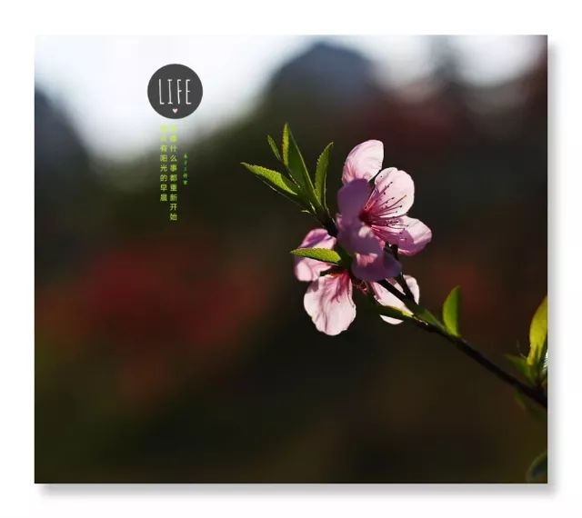
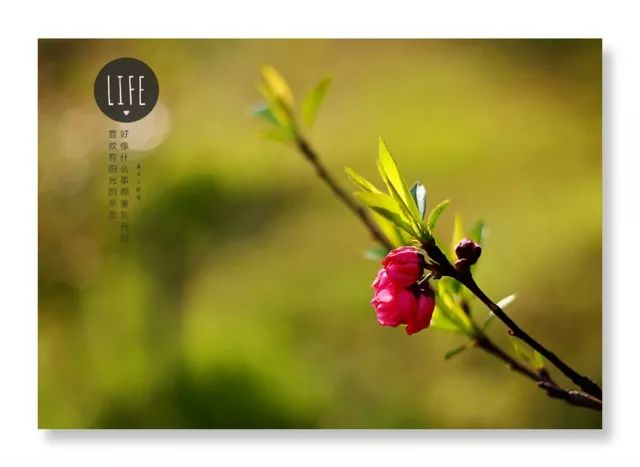
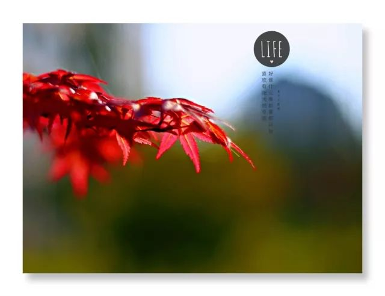
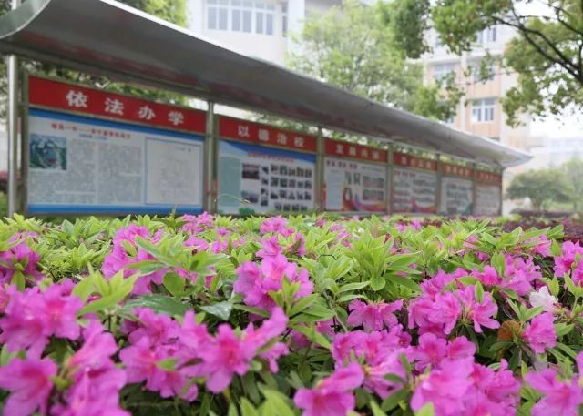
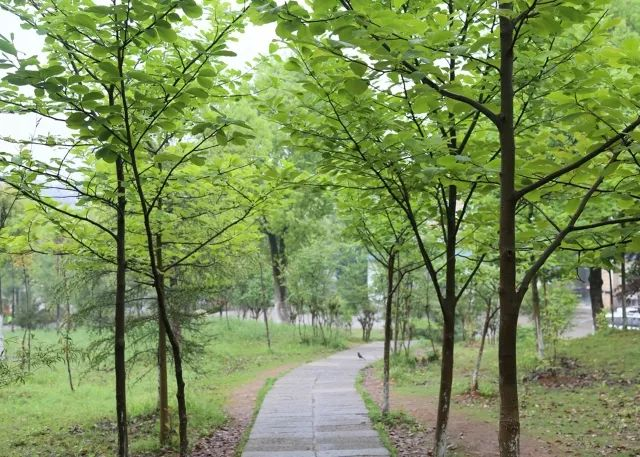
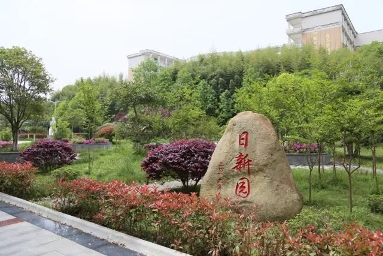
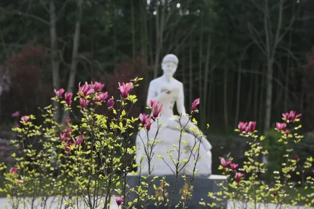
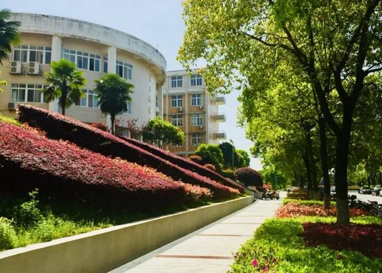
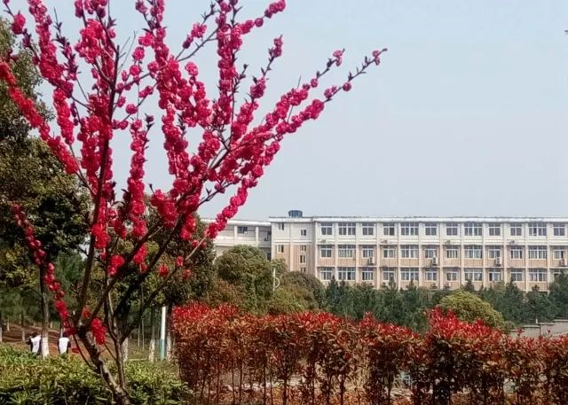

| 历史简介 | 学校荣誉 | 多彩一中 | 同学少年 | 高考金榜 |
| ---------------------------------------- |
------------------------------------------- |
一·中·掠·影 |
---------------------------------------- |
---------------------------------------- |
|  | 抓住春天的尾巴 邀你“云”游一中校园 漫步 打卡 赏景享受自然的馈赠 感受生命的张力 不负流年不负己 |
 | 时光微步 已然春深 都说 人间四月 芳菲落尽 这里却 春色如许 姹紫嫣红 留住了春的脚步 呢喃着花的细语 |
 |
|  | 这里的美随着季节的轮回律动，呈现出万千姿态。“东风随春归，发我枝上花。”春来得悄无声息，却如大自然的化妆师，不经意间打翻了调色盘，激起所有色彩的轻舞飞扬，绿了世界，也赐予了校园一个花的海洋、一段安暖时光。 | |||
|  | 春天，彰显生命的张力与炙热，孕育簇新的梦想与希望。来吧！一起走进春天，拥抱春光，将身心融入这盎然春意；一起徜徉校园，揽胜观景，谛听花开的声音，欣赏百花争艳闹枝头的盛况；一起举起相机，记录这悦人春色，收获美丽的心情，积蓄前行的力量，抒发热爱生活、热爱学校的真挚情感…… |  | ||
|  | 五月的风 吹来了夏的气息 少年拏云志 奋斗正当时 这片耕读圣地 终将 书写青春的炽烈 绘就如歌“丰”景 |
|||
|  |  | |||